| 日付 | 2011年12月17日（土） |
|---|---|
| 山域 | 奥武蔵 |
| メンバー | 家族（妻、長女・0歳） |
| 山行形態 | 子連れ日帰り |
| アクセス | 車 |
| ルート (Map) | 一の鳥居駐車場→武甲山→大持山→妻坂峠→一の鳥居駐車場 |
冬型の天気が続き、本日も晴予報だ。
どの山に登ろうかいろいろ検討したが、標高の高い山はどこも雪が積もっていて、
車でアプローチするのは難しそうだ。
武甲山であれば問題ないだろうと考え、行ってみることにする。
ついでに大持山にも登って、周回コースを歩いてみることにする。
8:43 一の鳥居駐車場到着。標高520m。
駐車場は凍りついている。気温は登り始める前から氷点下だ。
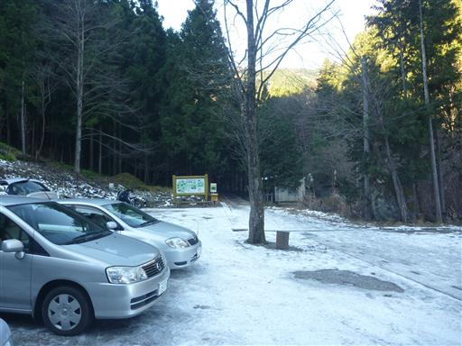
川に架かる橋は凍りついていて渡るのが怖い。
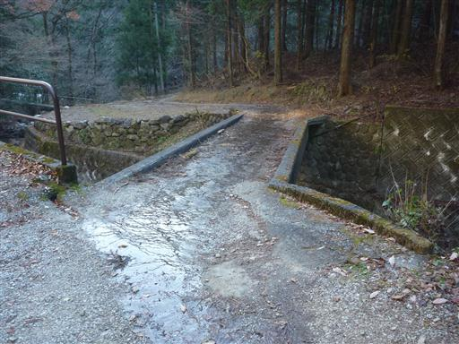
道を登っていくと釣り堀がある。
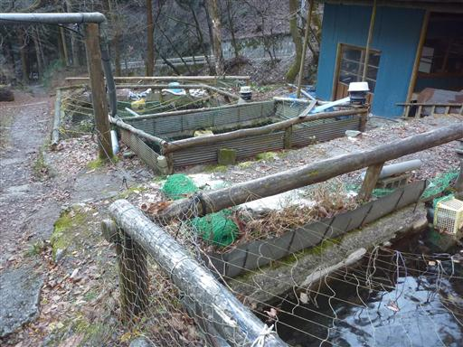
道端には一定間隔で丁目石が置かれている。
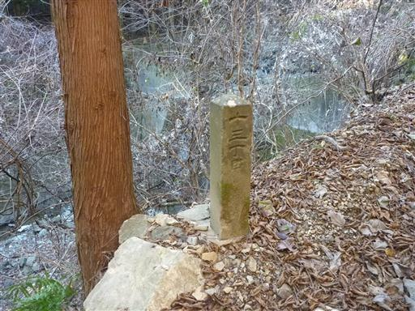
不動滝。名前も形も平凡な滝だ。
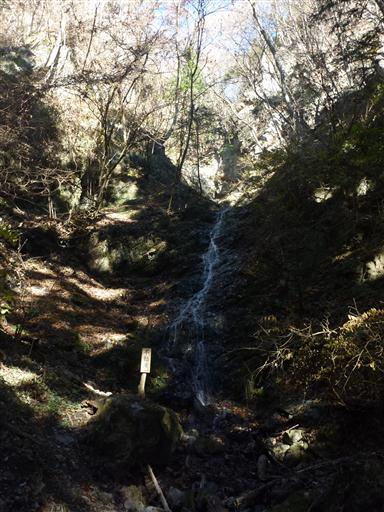
十八丁目には祠が置かれている。
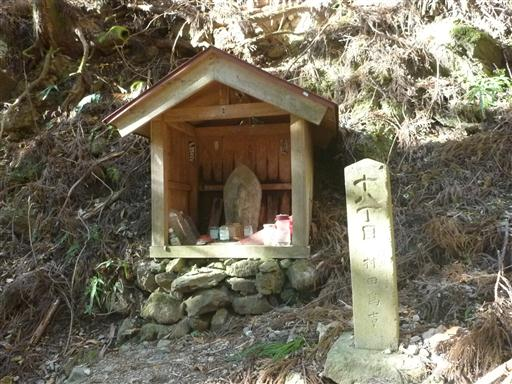
「武甲山御嶽神社」の立派な石柱が立っている。
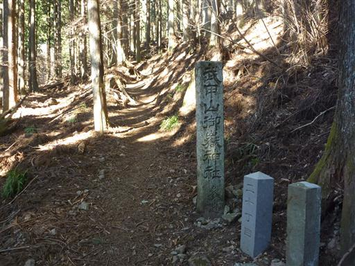
表参道はどこまでもどこまでも植林地帯が続いている。
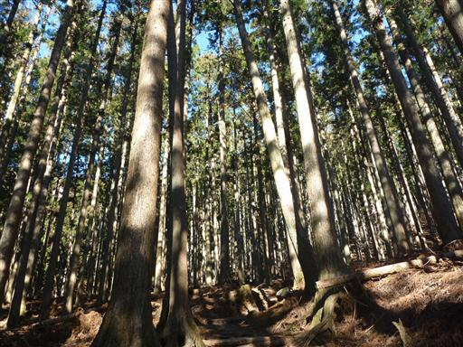
登山道の中間地点にある大杉に到着。
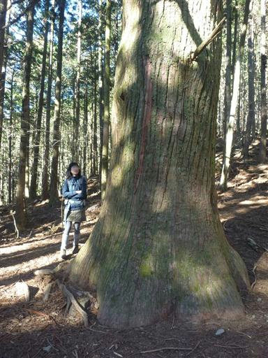
側に他の木がないため、あちこちに大きな枝を伸ばしている。
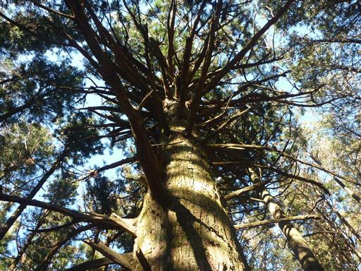
登山道脇には発達した霜柱が続いている。霜柱を壊しながら登っていく。
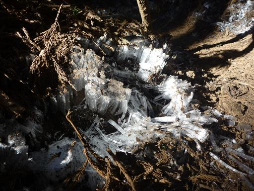
山頂に近づくと、地面に白い石が目立ってくる。
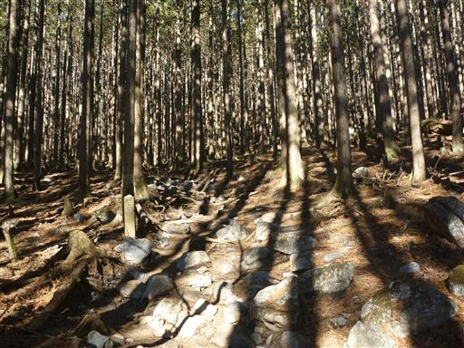
山頂直下の広場に到着。この辺りは植林がなく明るく開けている。

山頂に建つ武甲山御嶽神社。
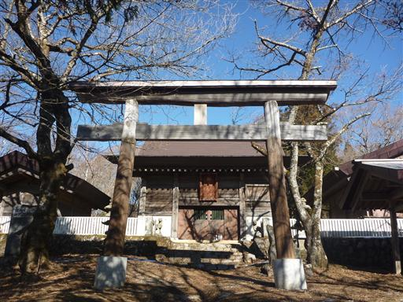
ここはちょうど52丁目。少々中途半端な数字だ。
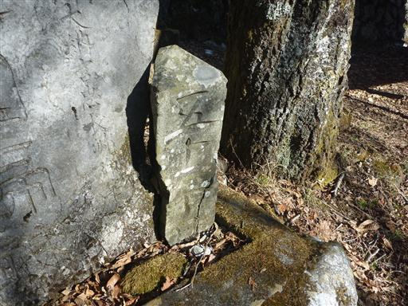
ここには狼の狛犬が祀られている。
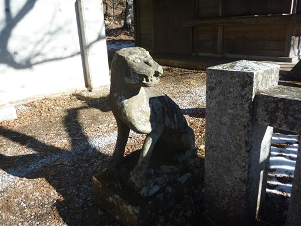
10:27 武甲山山頂到着。標高1304m。
神社の裏から少し登ると武甲山の山頂標識がある。
ここまで登ってようやく展望が開ける。
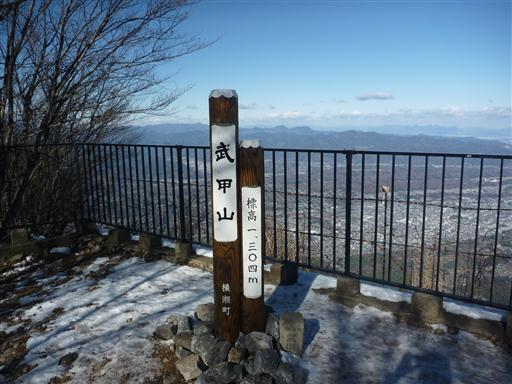
足元では今日も石灰岩を削る工事が行われている。
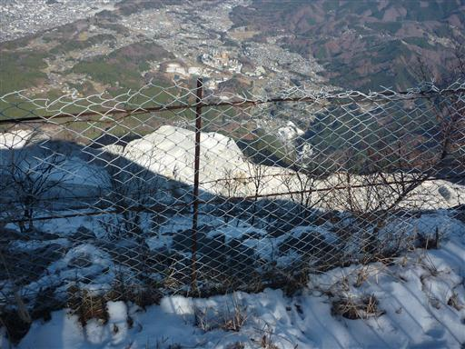
今回は武甲山から大持山へ向かう縦走路を歩くことにする。急な斜面を一気に下っていく。

真正面に小持山と大持山が見えてきた。なかなか立派な山容だ。
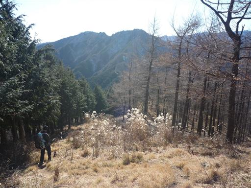
歩いて来た方向を振り返る。青緑茶白とカラフルだ。
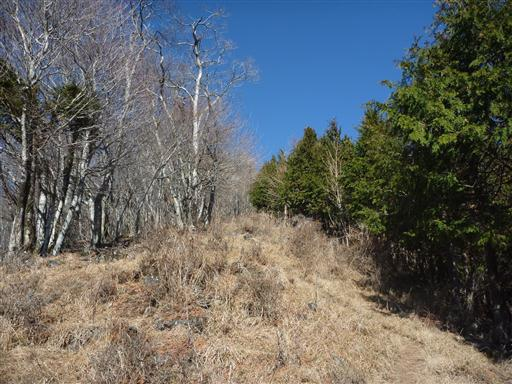
こちらから見る武甲山は秩父から望む武甲山とずいぶん形が異なり、丸い山容だ。
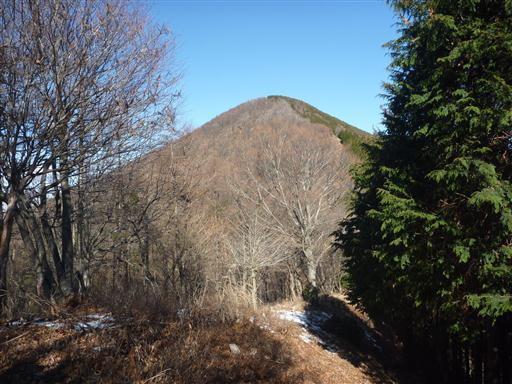
小持山への登り返しが始まる。こちらは北斜面のため登山道に雪が積もっている。
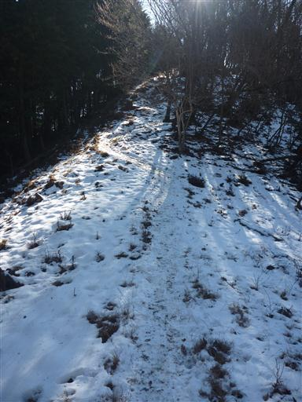
怖いくらいの急斜面を登る。緊張を強いられる登りにくい登山道が続く。
この登山道を下っていく人とも時折すれ違う。
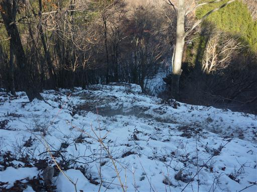
小持山に到着する。体が冷えたのか、子供が泣き出したのでここで手足を温める。
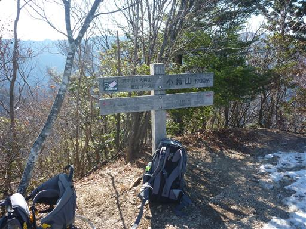
山頂からは武甲山が大きく見える。
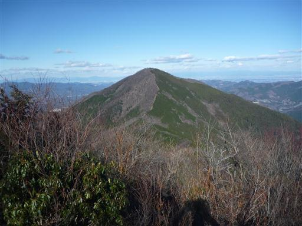
小持山から大持山に続く縦走路も雪がついていて歩きにくい。
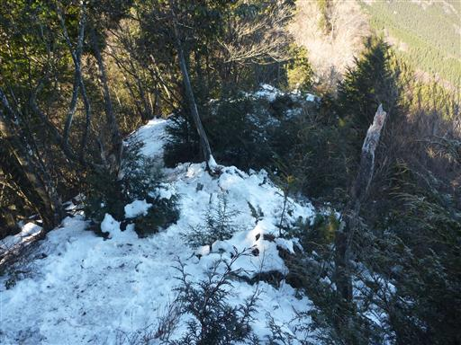
道中、大展望が広がるポイントに到着する。
目の前に見える山々は矢岳、坊主山などが連なるマイナーな尾根なのだが、
この景色を見て登りたくなってしまった。日帰りでは少々苦しいルートだ。
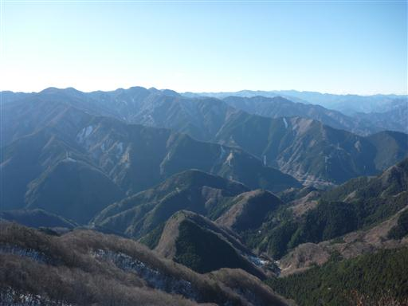
遠くには両神山が目立っている。

大きな岩が転がっている。岩の割れ目をすり抜けていく。
こういう時に大きなザックでは歩きにくい。

小さなアップダウンを何度か続けると大持山山頂が見えてきた。
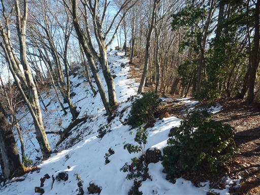
13:14 大持山山頂到着。標高1294m。
展望は悪くはないが、小持山や先ほどの展望台には敵わない。
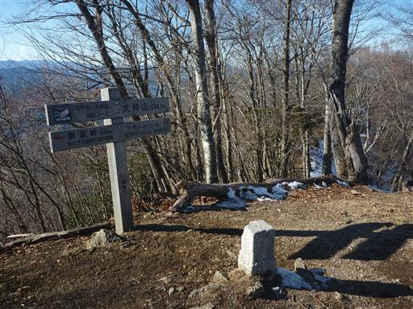
大持山から少し北に歩くと南側の展望が広がる。
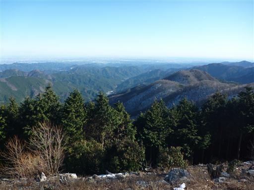
関東平野を見下ろす。遠くスカイツリーも見えている。
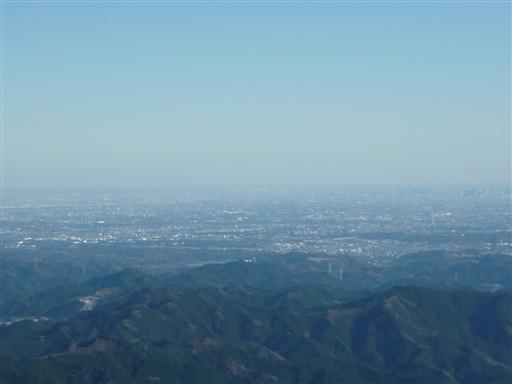
妻坂峠に向けて、ゆるやかな尾根道を下っていく。
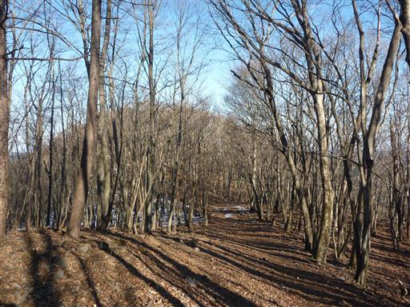
この辺りは美しい樹林帯が広がっている。
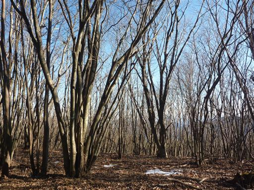
妻坂峠に到着。小さな地蔵がぽつんと置かれている。
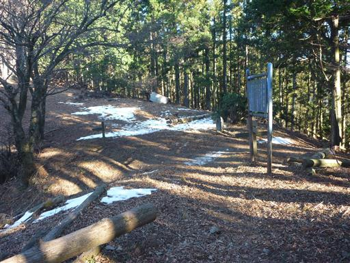
ここから駐車場に向かって下っていく。
北斜面を下ることになるが標高がだいぶ低くなっているので、もう雪はほとんどない。
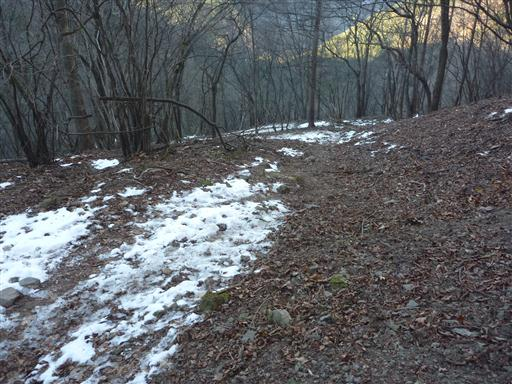
14:36 一の鳥居駐車場到着。
思いの外、雪に苦労させられた登山だった。
これからしばらくは、寒い山に行けなさそうだ。
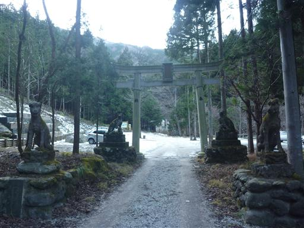